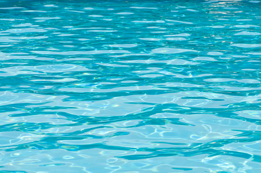
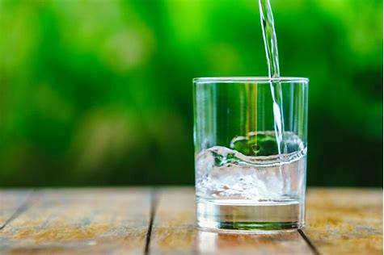
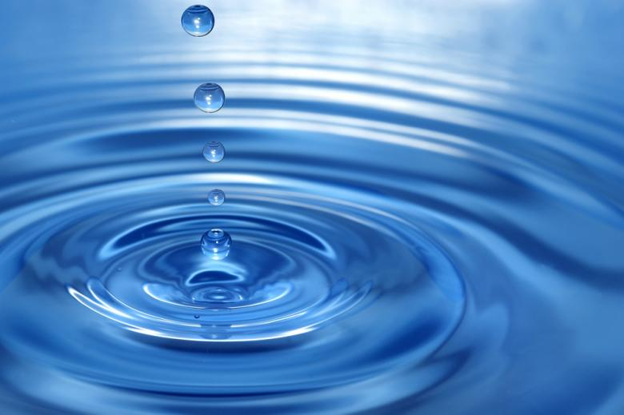

Àgua Limpa e Saneamento
A água é essencial para a vida humana e para o desenvolvimento sustentável. No entanto, muitas pessoas ao redor do mundo ainda não têm acesso a água limpa e saneamento básico.
  Além de ser essencial para a saúde humana, desempenha um papel vital em quase todos os aspectos do desenvolvimento sustentável, incluindo: Saúde Pública, Nutrição e Segurança Alimentar, Educação, Economia, entre outros... Neste site, vamos explorar a importância da água limpa e saneamento, os desafios que muitas pessoas enfrentam para acessar esses serviços básicos e as soluções que podem ser implementadas para melhorar a situação.